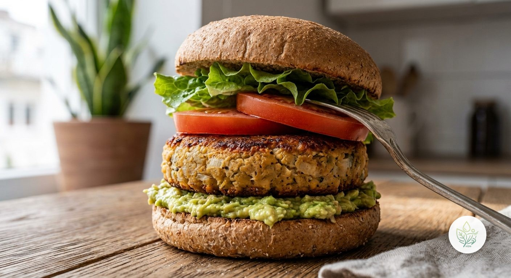

Hamburguesa Saludable de Garbanzos
ALa versión 100% vegetal de la hamburguesa clásica: una hamburguesa casera de garbanzos, pan integral y aguacate en vez de mayonesa. Sin carne, sin salsas ultraprocesadas y con una cantidad de fibra excepcional.
Esta hamburguesa cambia la carne por garbanzos cocidos, una legumbre rica en proteína vegetal que deja el plato completo con casi 26 g de fibra, muy por encima de cualquier hamburguesa con carne. El pan integral suma más fibra frente al pan blanco habitual, y el aguacate machacado hace de "mayonesa saludable", aportando grasa monoinsaturada en vez de la grasa de una salsa comercial. El queso curado queda como topping opcional, a disfrutar con moderación como en cualquier otra receta.
Ingredientes (toca el nombre para ver su ficha)
- 80 g
- 180 g
- 30 g
- 20 g
- 10 g
- 50 g
- 40 g
- 20 g
- 15 g
Elaboración
- Escurre y aplasta los garbanzos con un tenedor o batidora hasta conseguir una pasta gruesa (deja algunos trozos enteros para dar textura).
- Mezcla con la cebolla picada muy fina, el pan rallado integral y pimienta al gusto.
- Forma una hamburguesa con la mezcla y déjala reposar 10 minutos en la nevera para que compacte.
- Cocínala en una sartén con el AOVE a fuego medio, 3-4 minutos por cada lado, hasta que esté dorada.
- Machaca el aguacate con un tenedor y tuesta ligeramente el pan integral.
- Monta: pan, aguacate machacado, la hamburguesa de garbanzos, tomate y lechuga. Añade el queso curado si quieres, opcional.
Información nutricional (receta completa)
De las grasas, 6.8 g son saturadas · de los carbohidratos, 14.8 g son azúcares · sodio: 563.3 mg
Preguntas frecuentes
¿Cuántas calorías tiene la receta de Hamburguesa Saludable de Garbanzos?
Esta receta tiene 817.8 kcal en total (1 ración).
¿Es una receta vegana?
Sí, si no añades el queso curado opcional. Sin él, todos los ingredientes son de origen vegetal.
¿Se puede hacer sin gluten?
El pan integral y el pan rallado integral contienen gluten. Sustitúyelos por sus versiones sin gluten certificadas; el resto de ingredientes ya no llevan gluten.
¿Se pueden congelar las hamburguesas de garbanzos?
Sí, forma las hamburguesas crudas y congélalas entre papel vegetal; cocínalas directamente desde congeladas añadiendo 1-2 minutos más por cada lado.